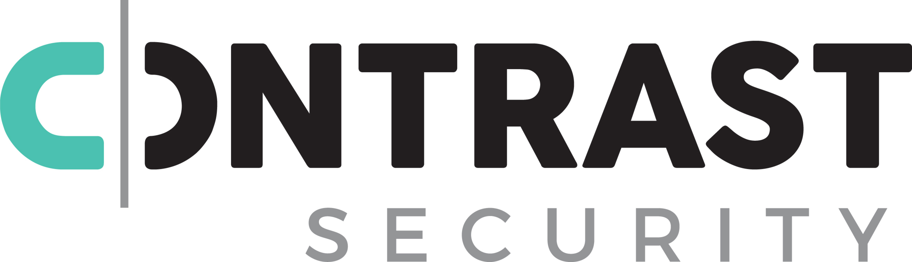

class: center, middle # Instrumentation; or, Making Choose Fast --- # TOC - instrumentation - my learning about it from contrast - binary vs source - simple java project? - `choose` explanation - `perf` - `flamegraph` - `choose` case study - examples galore --- # Instrumentation - What is it? - Code tracing - Debugging - Profiling - Performance counters - Data logging ??? What is it? - Software that hooks into an application to provide some of 5 main things [0] --- # Examples   ??? Contrast secures web apps by hooking into their incoming and outgoing network traffic and ensuring santization of user input New relic does performance analysis and stuff (show the website https://newrelic.com/)[1] --- # Types of Instrumentation - Binary - Hook into the compiled program, either assembly or possibly some IR - Source - Modify the source code of the program ??? [0] --- # A Concrete Example in Java JK Java sucks. This is where I'd put my Java example, if I had one. Might do something with an LLVM "pass" in a future talk tho.  --- # Tool time! ## `choose` ## `perf` ## `flamegraph` --- # `choose`  ??? My personal project, alternative to `awk` and `cut` designed to be more ergonomic, and seeking to have on par or better performance. Written in Rust, as all original software in the year 2019 was.[2] --- # `perf` > "Performance analysis tools for Linux" ??? - Linux command (starting in 2009) [3] - "Performance analysis tools for Linux" - man page [5] --- # `flamegraph`  ??? Tool to visualize profiled code [6] --- # A Closer Look at a Flamegraph  ??? The x-axis shows "stack profile population", sorted alphabetically, i.e. the x-axis is NOT time. The y-axis shows stack depth.[7] --- # In Conclusion # Star `choose` on GitHub <!-- Sources 0. https://en.wikipedia.org/wiki/Instrumentation_(computer_programming) 1. https://newrelic.com/ 2. https://github.com/theryangeary/choose 3. https://en.wikipedia.org/wiki/Perf_%28Linux%29 4. https://perf.wiki.kernel.org/index.php/Main_Page 5. http://man7.org/linux/man-pages/man1/perf.1.html 6. https://github.com/brendangregg/FlameGraph/blob/master/README.md 7. http://www.brendangregg.com/flamegraphs.html www.brendangregg.com/perf.html -->